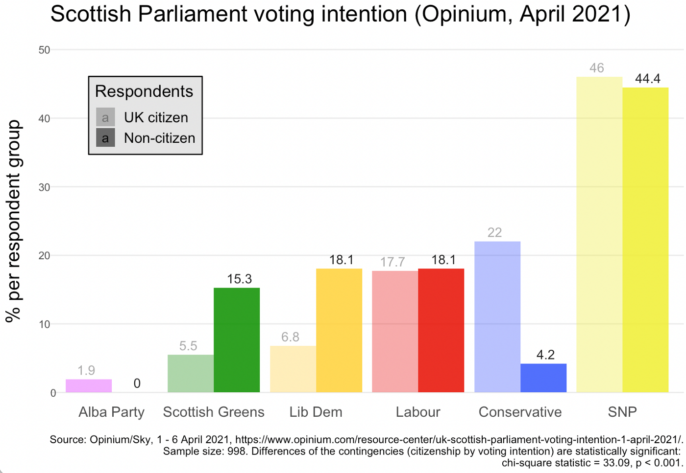
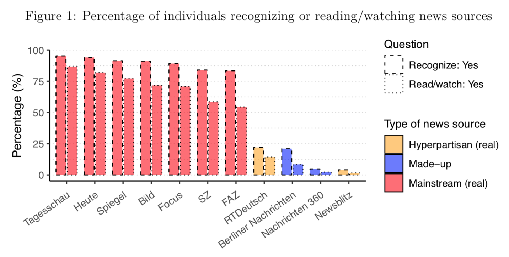

News archive
August 15, 2021. Data-journalistic piece for the Economist:"Can Europe go green without nuclear power?" As Germany is poised to shut down its nuclear plants, I was wondering how well the country fares in terms of greenhouse gas reduction.
July 6, 2021. Data visualization article in Socius: Co-authored with Paul C. Bauer, we point to the intruiging distribution of media trust in Germany. See "Horseshoe Patterns: Visualizing Partisan Media Trust in Germany".
May 6, 2021. Data-journalism blog on medium: Scotland votes and extended its voting rights to non-nationals. In this post, I examine some survey data what effects this might have on the main parties. In short: Good for the Greens, bad for the Conservatives.
January 15, 2021. Data-journalism blog on medium: I started my own blog with short data journalism pieces! The first post (in German) explores the career of the strange and controversial term "Israelkritik" in the German media, decisively ahead of "Chinakritik" or "Russlandkritik", using data from the newspaper archive Factiva. The graph below shows the occurence of the terms across time:

December 15, 2020. New working paper: In this study, I test whether US conservatives or liberals are better at discerning true from false news. I use an original and innovative data set: In contrast to previous studies, I randomly sample the news items I show to participants from a larger collection (built from the Google News API and fact-checkers).
October 21, 2020. Shiny app for teaching regression: This app let's you visualize regression with one or two predictors, in order to get an intuitive understanding what "ordinary least squares" does.

July 30, 2020. New working paper: In this study, I examine designs to test differences between conservatives and liberals in truth discernment and bias. One typical design selects a number of real-world stimuli without clearly defining the relation to some "target population" of information. As the graph below shows, slightly varying such a set of stimuli changes the difference one finds between conservatives and liberals significantly.

March 7, 2020. R function for finding a "typical" tree in a random forest: Random forests are easy to understand when visualized. To avoid not seeing the trees behind the forest, one intuitive way to visualize is to plot a "typical" tree. Building on the "grf"-package for R, this function picks and plots the tree with most common partitions.
Jan 18, 2020. Shiny App for visualizing identities of Twitter users (prototype): For this project I want to show how self-ascribed identities, as they show up in the Twitter "bio", are distributed geographically. This prototype version illustrates, with a sample of Twitter users, how a couple of political and social identities spread across the US.

Nov 18, 2019. Python function for approximating following dates of Twitter followers: The Twitter API does not provide information about when a Twitter user started following another. This code allows you to infer the earliest possible date a user can have started following another user.
Oct 18, 2019. Shiny App for teaching experimental methods: This app helps teaching the role of randomization in experiments. Experiments are considered the "gold standard" of causal inference because through randomization, treatment groups are in expectation equal on known as well unknown variables. The app allows users to re-assign treatment groups and observe distribution on a number of background variables.
Aug 27, 2019. New working paper with Paul Bauer: "Building Trust in Fake Sources. An Experiment". What makes people trust some sources and distrust others? In a survey experiment using highly realistics stimuli, we investigate the impact of the source (known vs. unknown), channels of distribution (Facebook vs. website), and congruence of content on media trust and sharing. A key finding shows that a source that we make up - and is thus unknown to people - can gain people's trust if it caters to their pre-existing attitudes.
June 24, 2019. Early Career Scholar's contribution for the ISPP blog: In this blog post I discuss how much we can trust social media users to rate trustworthiness of sources.